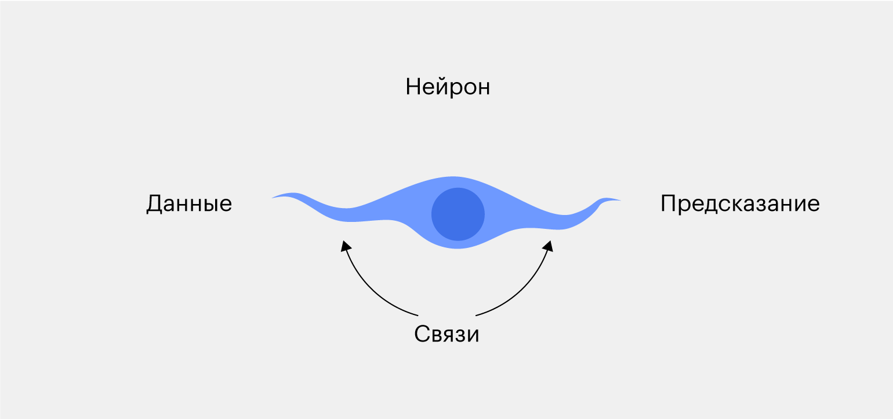
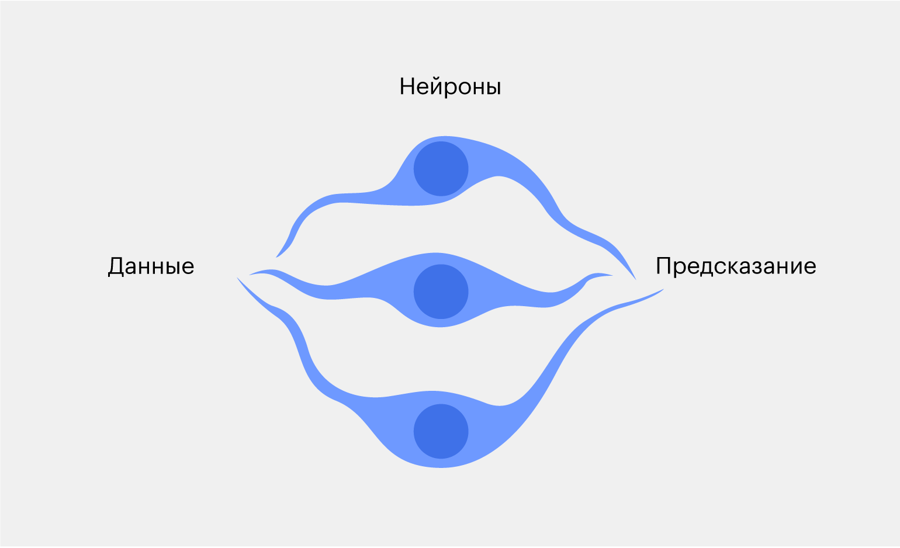
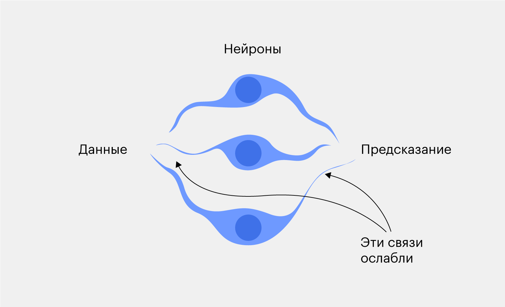

Deep Learning

Deep learning — это способ научить компьютер делать сложные вещи: распознавать лица, определять объекты на фотографии или писать статьи по программированию.
Самый простой способ обучения — дать компьютеру много примеров и надеяться, что он их запомнит. Например, если хотим научить компьютер отличать яблоки от бананов, показываем ему сначала яблоко и говорим: «Это яблоко». Затем показываем банан и говорим: «Это банан». Повторяем это много-много раз.Хорошо, логика понятна — показали примеры, а компьютер запомнил их. А если компьютеру попадётся новое изображение, которого не было в датасете? Что нужно сделать, чтобы он не растерялся? Создать нейронную сеть!
Нейросеть — это программа, которая притворяется человеческим мозгом. Она состоит из нейронов, которые общаются между собой. Вместе они создают сеть «мозговых клеток», чтобы запоминать информацию и принимать решения.Если копнуть чуть глубже, то нейросеть — это сложная математическая модель. В ней нет никакой магии — только непонятные формулы из матанализа и теории вероятностей. Но всё это магическим и математическим образом помогает компьютеру думать.Когда нейронка видит фотографию, она начинает искать признаки яблока: смотрит на форму, цвет, текстуру и так далее. Затем сравнивает найденные особенности с тем, что видела раньше, и принимает решение: яблоко это или банан.Чтобы нейронная сеть увереннее распознавала объекты, ей нужно дать больше примеров. «Больше» — значит тысячи или даже миллионы.Давайте спустимся в операционную и посмотрим, из чего же состоят нейросети.
Как устроена простая нейронная сеть
Начнём с простой нейронной сети, а затем будем двигаться дальше — к многослойным сетям и современным моделям deep learning. Всё здесь подчиняется базовым правилам.
Нейросеть состоит из нейронов и связей между ними:
Нейрон — это на самом деле небольшая программа, которая умеет делать три вещи: получать данные, обрабатывать и передавать дальше.
Нейроны скрепляются связями, которые характеризуются весом. Вес — это число, показывающее, насколько крепко воспоминание.
Самая простая нейросеть состоит всего из одного нейрона:

На вход нейрон получает данные — например, фотографию яблока или банана. Он обрабатывает её — скажем, проверяет цвет всех пикселей. Затем нейрон делает вывод: если зелёных пикселей больше, чем остальных, то это, вероятнее всего, яблоко. А если больше всего жёлтых, то это банан.
Алгоритм несложный и неточный. Представьте, что будет, если дать нейросети незрелый банан зелёного цвета или просто жёлтое яблоко. Получается, делать выводы только по цвету фрукта — недостаточно.
Чтобы повысить точность, можем добавить ещё два нейрона. Пусть один из них смотрит на форму объекта, а второй — на хвостик фрукта.

Теперь фотография банана передаётся сразу в три нейрона, затем каждый из них обрабатывает картинку по своим правилам и передаёт предположение на выход.
Когда три нейрона отработают, получится три результата — например, первый и третий скажут, что это банан, а второй будет утверждать, что яблоко. В конце нейросеть подсчитает, каких голосов было больше и выдаст этот вариант за окончательный результат.
Связи показывают, насколько сильно нейрон влияет на принятие решений. Если связь слабая — значит, его голос будет учитываться последним. А если крепкая — он может перекрыть своим решением голоса других нейронов. Настоящая демократия.
Когда нейросеть выдаёт неправильный результат, мы снижаем влияние нейронов, которые привели к этому результату. Так и проходит deep learning.

Нейроны, связи, программы… Получается, мы сами программируем нейросеть? В чём тогда искусственный интеллект? А вот в чём:
Программы, зашитые в нейроны, не прописываются вручную. Они находятся путём проб и ошибок во время обучения самой нейронной сетью. Структура нейронки, например количество слоёв и нейронов, задаётся разработчиком с помощью языков программирования. Например, на Python это можно сделать с помощью специальной библиотеки TensorFlow.
Мы рассказали, что нейроны могут считать цвета в пикселях, смотреть на форму объектов и хвостики фруктов. Но в реальности никто не знает, почему нейросеть работает так, как она работает. Нейроны сами создают алгоритм, по которому учатся отличать яблоки от бананов. Мы им никак не помогаем — только вознаграждаем за правильные ответы и наказываем за неправильные.
Нейрон может даже полагаться на необычные явления — например, на отбрасываемую тень от фрукта или его отражение в зеркале. Этим нейросеть действительно похожа на человеческий мозг, потому что люди тоже не до конца понимают, как он работает.
А теперь перейдём от простых нейронок к сложным, или многослойным.
Какие есть алгоритмы глубокого обучения
Их много — и с каждым днём становится всё больше. Но, к сожалению, ещё не придумали универсальный способ заставить нейросеть решать любые задачи. Поэтому пока обходятся разными алгоритмами: для работы с изображениями используют свёрточные нейросети, а чтобы писать текст — рекуррентные.Давайте разберёмся, как работают популярные алгоритмы.
Свёрточные нейронные сети (convolutional neural networks, CNN) Зачем нужны: помогают обрабатывать картинки и лучше понимать, что на них изображено.
Как работают: добавляют в нейросеть дополнительные слои — свёрточные. Они нужны, чтобы анализировать изображение тщательнее.
В свёрточных слоях на картинку накладывают фильтры — например, делают чёрно-белой, выделяют все углы или обрезают. Так нейросеть находит новые детали, которые помогут ей лучше определять объекты на изображении.
Первый свёрточный слой обычно нужен, чтобы находить все края и углы у объектов. Следующие слои — чтобы видеть более сложные элементы, например форму или текстуру. А последний слой собирает все детали вместе и делает предсказание.
Рекуррентные нейронные сети (recurrent neural networks, RNN) Зачем нужны: помогают понять и обработать элементы, которые идут последовательно и связаны друг с другом, — например, текст.
Как работают: запоминают всё, что происходило раньше, чтобы понимать, что произойдёт дальше.
Рекуррентные нейросети состоят из звеньев, которые похожи на бусы. Каждая бусинка — это кусок информации, такой как слово. Вместе бусы образуют цепочку отдельных бусинок, которые связаны друг с другом.
Эта концепция может показаться запутанной, потому что здесь есть слово «рекурсия», но главный смысл рекуррентных нейросетей в том, что они умеют проводить ассоциации между разными объектами.
Когда рекуррентная нейронная сеть получает предложение на вход, она анализирует каждое слово по отдельности. Новые слова соединяются с уже изученными — так нейросеть понимает контекст и значение каждого слова в связке с окружающими.
Разновидность архитектуры RNN — сети с долговременной и кратковременной памятью (long short-term memory, LSTM). Они сохраняют в памяти информацию, пока её не попросят удалить. LSTM-сети обычно используют в связке с другими видами deep learning. Например, ChatGPT работает по такой схеме: чат-бот запоминает, что пользователь писал раньше, чтобы выдавать ему более релевантные ответы.
Генеративно-состязательные сети (generative adversarial networks, GAN) Зачем нужны: рисовать, сочинять музыку и писать стихи — или просто творить.
Как работают: используют связь из двух нейросетей — художника и критика. Художник создаёт что-то новое, а критик пытается понять, создано это реальными художниками или нейросетью.
С каждым новым творением нейросеть-художник становится всё лучше — в умении подражать художникам-людям и умении обманывать нейросеть-критика. А нейросеть-критик учится внимательнее анализировать творения художника.
Такое «состязание» помогает нейронной сети быстро обучаться. И для этого человеку даже не нужно прикладывать усилия, достаточно алгоритма для проведения машинного обучения.